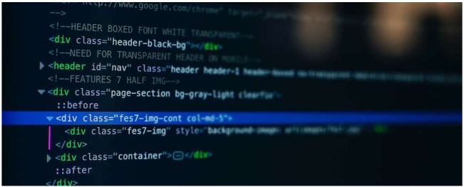
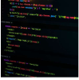

The Basic Language of the Web : HTML
Posted by Laura Jones On Monday, June 21st 2027

All modern websites and web applications are built using three fundamenntal
technologies: HTML,CSS, and JavaScript. These are the lenguages of the web
In this post, let´s focus on HTML. We will learn what HTML is all about, and why you too should learn it.
What is HTML?
HTML stands for HyperText Markup Language.
It´s a markup language that web developers use to structure
and describe the content of a webpage (not a programing language).
HTML consist of elements that describe different types of content: paragraphs,headings,images,
video,etc. Web browsers understend HTML and render HTMLcode as websites.
In HTML, ech element is made up of 3 parts:
- The opening tag
- The closing tag
- The actual element
You can learn more at MDN Web Docs
Why Shoul you learn HTML?
There are countless reasons for learning the fundamenttal language of the web. Here are 6 of them:
- To be able to use the fundamental web dev language
- To hand-craft beutiful websites instead of relying on tools like Worpress or Wix
- To Buil web aplications
- to impress friends
- to have fun
Hopefully you learned something new here, Se you next time!
Related posts
- How to learn Web Development
By Jonas Schemedtmann - The Unknown Powers of CSS
By Jim Dillon - Why JavaScrip is Awesome
By Matilda